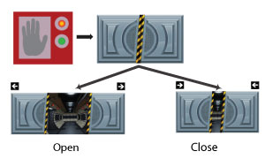

About Door Monitor
Door Monitor is an application that opens the corridor doors on Starship Qeo when a hand is held in front of a sensor. It uses an Event to indicate whether the door sensor was activated and a State to indicate whether the door is open or closed. For various reasons, the sensor is not (always) located next to the door..

QDM
Below is the QDM:
<?xml version="1.0"?>
<types xmlns="http://www.qeo.org/formal/2013/Qeo_Data_Model" version="0.1">
<include file="qeo_types.xml"/>
<module name="org::qeo::sample::doorexample">
<struct behavior="event" name="DoorSensor">
<member name="userID" type="org::qeo::UUID" key="true">
<doc>Unique ID of the activating user.</doc>
</member>
<member name="doorID" type="org::qeo::UUID"
<doc>ID of door related to the sensor</doc>
</member>
</struct>
<struct behavior="state" name="Door">
<member name="id" type="org::qeo::UUID">
<doc>Unique ID of the door. This ID is provided by the door client.</doc>
</member>
<member name="open" type="boolean">
<doc>Status of the door. False equals closed, true equals opened.</doc>
</member>
</struct>
</module>
</types>
The sensor generates an event (DoorSensor) indicating that the sensor was activated. The door Data Type has two parameters: the door ID (of type UUID) and the status, a boolean indicating whether the door is currently open or closed.
Application Logic
A simple application logic would be (pseudocode):
proc init:
self.sensorsNearMe = {...}
self.usersWhoCanOpenMe = {...}
self.doorWriter = Qeo.createStateWriter(topic = org::qeo::sample::doorexample::Door)
self.sensorReader = Qeo.createEventReader(topic = org::qeo::sample::doorexample::DoorSensorActivation, onData = self.onDoorSensorActivation)
proc onDoorSensorActivation(activation)
if activation.sensorID in self.sensorsNearMe:
if activation.user in self.usersWhoCanOpenMe:
self.open()
<wait for person to pass through the door>
self.close()
proc open:
<unlock hydraulics>
<open door>
self.doorWriter.write({id = self.id, open = true})
proc close:
<close door>
<lock hydraulics>
self.doorWriter.write({id = self.id, open = false})
Upon reception, the application reads the state of the door upon occurrence of a doorSensor event. Depending on that state, the hydraulics that keep the door closed are deactivated or activated. After that, the application also changes the State of the door to indicate the physical state of the door has changed.
{kind=link}
{kind=link}